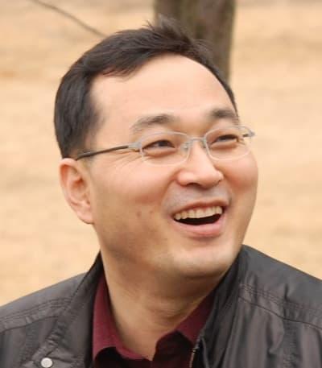

IoT Day (Monday, June 27th)
Welcome: 8:15-8:30
Keynote 1: 8:30-9:45
Neuro-symbolic Architectures for the Internet of Things
Speaker: Prof. Mani Srivastava
|
Moderator: Prof. Falko Dressler
|
Abstract: The nexus of deep neural networks (DNNs) and the Internet of Things (IoT) allows sensing and actuation to be performed in our personal, social, and physical spaces in previously unimagined ways. Deep learning methods deployed across the edge-cloud continuum enable IoT systems to make accurate predictions and decisions from high-dimensional and unstructured real-world sensory data while benefiting from the high-performance tensor operations in hardware accelerators. As a result, in many settings, DNNs have entirely replaced symbolic and mechanistic approaches based on algorithms, scientific models, and human knowledge. However, the benefits come with considerably reduced abilities to generalize to new situations, to assure trustworthiness, and to reason about complex spatiotemporal events that require connecting the dots across large spans of time and space. We will present emerging neuro-symbolic approaches that seek to overcome this tension by integrating neural representations with symbolic reasoning. The former allows efficient processing of multimodal sensory inputs to create precepts that assist reasoning and the latter provides interpretability, enforces constraints, allows for human knowledge injection, and acts as regularizers that guide the learning of neural components. The talk will describe the unique capabilities that neuro-symbolic architectures bring to the IoT domain and the research challenges they present.
Bio: Mani Srivastava is on the faculty at UCLA where he is associated with the ECE Department and the CS Department. His research is broadly in the area of human-cyber-physical and IoT systems that are learning-enabled, energy-efficient, secure, privacy-aware, and application-driven. It spans problems across the entire spectrum of applications, architectures, algorithms, and technologies in the context of systems and applications for mHealth, sustainable buildings, and smart built environments. He is a Fellow of both the ACM and the IEEE. More information about his research is available at http://www.nesl.ucla.edu and https://scholar.google.com/citations?user=X2Qs7XYAAAAJ.
Keynote 2: 9:45-11:00
Tactical Networks: Transforming “Network-Centric” to IoT
Speaker: Dr. Jae Kim
|
Moderator: Prof. Wei Gao
|
Abstract: Within the military domain, the Internet of Things (IoT) may not be a new concept. In the late 1990s, the U.S. Department of Defense (DoD) has already envisioned a future battlefield by introducing a “network-centric warfare” concept by integrating the physical, information and cognitive domains for efficient information sharing and collaboration in the contested DIL (disconnected, intermittent, and low-bandwidth) environments. Since then, Network-centric operational concepts (CONOPs) have been a driving force behind recent defense transformation and led to the adoption of IoT-related technologies primarily in the area of C4ISR systems. This has served as the foundation of IoT and paved the way for Tactical IoT (a.k.a., Internet of Battlefield Things, IoBT) concept. The U.S. Army Research Lab (ARL) created the Internet of Battlefield Things (IoBT) project in 2016 and its IoBT Collaborative Research Alliance (CRA) research consortium in 2017 to advance the theoretical foundation and accelerate development of IoBT systems. Boeing Research & Technology (BR&T) has been conducting extensive researches on Tactical Mobile Networking for C4ISR applications for the last two decades or more. In this talk, decades of research works, solutions and lessons on tactical mobile networking at BR&T will be presented, focusing on Tactical Edge Networks, Adaptive MANET, to Software Defined Network (SDN), Communications as a Service (CaaS), and recent AI-based Network projects. Finally, the IoBT-related ongoing research projects, for example, UAV Swarm Communication and Anomaly Detection, Air Launch Effect (ALE) Platform-to-Platform communications, Network Digital Twins for IoBT, under Boeing’s Strategic Universities Alliance Program will be introduced.
Bio: Dr. Jae H. Kim is an Executive and Senior Technical Fellow of The Boeing Company, responsible for providing Enterprise-wide integrated system solutions and products to meet Boeing’s needs in the Communications and Network, Cyber Security Technology Domains, while supporting a long range business strategy for the products and services. Dr. Kim has been a PI/PM for a number of U.S. Department of Defense programs from DARPA, Army CERDEC, Air Force AFRL, Navy ONR and NASA. He has been also serving as an Affiliate Professor of Electrical and Computer Engineering Department, University of Washington, Seattle, WA since 2000. Prior to joining The Boeing Company High Tech Center in 1991, he has been a Senior Research Scientist and Project Manager at the California Institute of Technology (Caltech), NASA Jet Propulsion Laboratory since 1987. His research area of interests is wireless mobile communications and networking, focusing on adaptive MANET, autonomous UAV/Drone networking, jamming-aware cognitive radio network, Software Defined Networking SATCOM, autonomous AI/ML-based network management, recently 5G adoption to military and digital transformation under extreme contested environments. He has been working on mobile ad-hoc networking (MANET), airborne internetworking with a small-size, low-weight UAV-based and open mobile tactical router, also developing Software Defined Network (SDN)-based satellite communication (SATCOM), unified networking framework and contents-aware Universal Messaging System (UMS) across heterogeneous networks. Recently, he is working in the collaborative research projects on AI-based tactical networking, distributed UAVs Swarm communication and anomaly detection, Air Launch Effect (ALE) platform-to-platform communications, Network Digital Twins (DTw) for Tactical IoT (a.k.a., IoBT). Dr. Kim is an author/co-author of 100+ publications, receives 8 U.S. Patents and 2 International Patents (EU, UK, Germany, France, China and Japan pending), 10 NASA Technical Innovation Awards, and 25+ Boeing Technology Awards for outstanding technical performance recognition. Dr. Kim co-edited a book, “Green IT: Technologies and Applications” published by Springer (August 2011), that has been listed as a top 25% most downloaded eBooks in the relevant Springer eBook Collection in 2012, and co-edited a book, “UAV Networks and Communications,” published by Cambridge University Press (January 2018). Dr. Kim has served as an IEEE Associate Editor for the Communications Letters (Monthly Technical Journal) for a decade since 2001. He had served various Technical Conferences and Workshops as reviewer and organizers. He was a Technical Program Chair of IEEE MILCOM 2011 (Baltimore, MD) on November 2011. Dr. Kim received his B.S. and M.S. from Seoul National University, Korea, and Ph.D. from University of Florida, Gainesville, all from Electrical and Computer Engineering. Dr. Kim is an IEEE Life Senior Member (2017).
Keynote 3: 11:15-12:30
Internet of Medical Things: Predicting Clinical Outcomes with Wearables

Speaker: Prof. Chenyang Lu
|
Moderator: Prof. JeongGil Ko
|
Abstract: Recent years have witnessed the emergence of Internet of Medical Things (IoMT) as new clinical instruments for precision medicine. IoMT is driven by growing adoption of wearable devices and advancement in machine learning. While wearable devices allow unobtrusive monitoring of patients outside clinical environments, machine learning enables predicting clinical outcomes based on longitudinal wearable data. However, to realize its potential in precision medicine, IoMT must overcome three key challenges: (1) extracting reliable clinical information from noisy and lossy wearable data, (2) building robust predictive models with limited training data, (3) personalized prediction of treatment outcome. To tackle these challenges in real-world clinical studies, we first present a robust machine learning pipeline tailored for wearable data collected in daily life. We will then explore multi-task machine learning models for personalized predictions of treatment outcomes based on wearable and clinical data collected from randomized controlled trials (RCTs). We demonstrate the effectiveness of our approaches in two real-world clinical trials using Fitbit wristbands. In the first trial, we applied the machine learning pipeline to predict post-operative complications and hospital readmissions of patients undergoing pancreatic surgery. In the second trial, we trained the multi-task model using data from an RCT to predict depression remission of patient with and without an integrated intervention treatment. Results from the clinical studies demonstrated the effectiveness of the machine learning pipeline in improving predictive accuracy in the presence of significant noise and missing data collected by wearables. Furthermore, machine learning provides a promising approach to utilizing data collected in RCTs to develop predictive models for precision medicine. The talk will conclude by highlighting opportunities and directions in advancing IoMT as a vital instrument for precision medicine.
Bio: Chenyang Lu is the Fullgraf Professor in the Department of Computer Science and Engineering and the Founding Director of the Institute of Artificial Intelligence and Internet of Medical Things for Healthcare at Washington University in St. Louis. His research interests include AI and IoT for healthcare, embedded and real-time systems, and cyber-physical systems. He is Editor-in-Chief of ACM Transactions on Cyber-Physical Systems. He also served as Editor-inChief of ACM Transactions on Sensor Networks, Chair of the IEEE Technical Committee on RealTime Systems (TCRTS), and Program/General Chair of leading conferences on Internet of Things (SenSys), real-time systems (RTSS/RTAS), and cyber-physical systems (ICCPS). He is a Fellow of ACM and IEEE.
Keynote 4: 1:30-2:45
Towards an Operating System for Digital Twinning
Speaker: Prof. Matthew Caesar
|

Moderator: Prof. Junehwa Song
|
Abstract: Modern IoT systems are decentralized across wide areas, make use of advanced and complex AI/ML algorithms, and face challenging resource and connectivity constraints. These properties make it difficult for operators and developers to debug and diagnose problems when they occur, leading to vulnerabilities, management challenges, outages, and poor performance. In this talk, I will explore the use of “digital twinning”, a technique which has been used in other fields of engineering to improve reliability with great success, to solve these problems. In particular, I will present a distributed run-time layer approach for IoT-based digital twinning. It makes use of virtualization technologies, formal methods, and optimization algorithms to construct, manipulate, and automatically test and tune cloud-hosted virtual representations of IoT deployments. I’ll discuss several challenges and solutions towards achieving this goal, as well as use cases and future directions in this emerging area of research.
Bio: Matthew Caesar is a Professor in the Department of Computer Science at the University of Illinois at Urbana-Champaign. He has worked in the area of systems and networking for over two decades, publishing over 50 technical papers, which have resulted in multiple best paper awards. He received the NSF CAREER award, DARPA CSSG membership, is a CAS Fellow, and received the “Test of Time Award” from the USENIX Symposium on Networked Systems Design and Implementation for his foundational contributions to software-defined networking. Matthew has a long history of successful technology transfer. He co-founded Veriflow, which was recently sold to VMware in 2019; at AT&T he co-developed the Routing Control Platform, a route management technology which remains in daily use in their North American IP backbone. Matthew is currently serving as Vice Chair of ACM SIGCOMM and co-chairing the Networking Channel, an online talk series for the computer systems and networking community.
Keynote 5: 3:00-4:15
Intermittent Computing: A Reality Check
Speaker: Prof. Luca Mottola
|
Moderator: Prof. Xiaofan (Fred) Jiang
|
Abstract: The Internet of Things has a problem: batteries. They are bulky, a pain to replace, and hard to dispose of. Ambient energy harvesting may come to the rescue by providing theoretically unlimited energy supplies. Extreme energy scarcity, however, often causes executions to become intermittent, requiring new hardware and software designs. Several works studied the leap from a traditional execution model to an intermittent one, yet their practical application in real-world scenarios is limited. Through first-hand experience in multi-year deployments of battery-less systems, we argue that the virtuous cycle of theoretical investigation, system implementation, and real-world deployment must be applied to intermittent computing as well, or its potential is bound to remain unexpressed.
Bio: Luca Mottola is an Associate Professor at Politecnico di Milano (Italy). His lab focuses on modern networked embedded systems, researching in intermittent computing, nanosatellites, mobile embedded computing, Internet-connected robotics, and low-power wireless. To date, he is the only European researcher to be granted multiple times with the ACM SigMobile Research Highlight and to ever win Best Paper Awards at multiple flagship conferences of both ACM SigMobile and ACM SigBed. He was General Chair for ACM/IEEE CPS-IoT Week 2022 and past PC chair for ACM MOBISYS, ACM SENSYS, ACM/IEEE IPSN, and ACM EWSN. He is a Google Faculty Award winner and an associate editor of IEEE Transactions on Mobile Computing, ACM Transactions on Sensor Networks, and Elsevier Computer Networks. He holds or held visiting positions at Uppsala University, NXP Technologies, TU Graz, and USI Lugano.